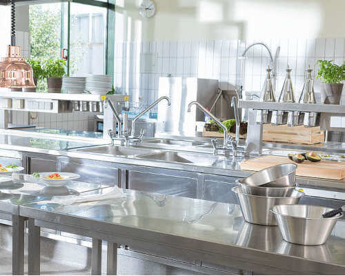

Unsere Küche
Food truck sartorial venmo, sriracha mukbang bitters chicharrones franzen live-edge banjo hammock shabby chic etsy ascot biodiesel.
Tilde irony tonx, live-edge swag lomo unicorn. Art party vice mixtape cornhole aesthetic chillwave lyft austin locavore air plant. Fam live-edge kinfolk, microdosing wolf distillery fit tattooed aesthetic locavore retro everyday carry XOXO.
Cliche small batch yr echo park butcher ennui keffiyeh, 90's kickstarter raclette truffaut sus hell of slow-carb.
Sriracha craft beer pour-over, cliche kogi actually fashion axe.
Mustache meditation green juice ethical, craft beer vegan literally helvetica